Candidate List 20260315 Previous Day Next Day Section 1: New Sources (age<1d) Cosmological Afterglow
Section 2: Old (1-5d) sources observed last night placeholder
Section 1: New Afterglow/FBOT Cands Last Night (0)
Section 2: Older Sources Observed Last Night (25)
0. ZTF26aajyasd (Afterglow?) [Back to Top] [Share] [Trigger Swift] [Fritz ] [Lasair ]RA, Dec: 202.37796, 78.22074 13h29m30.71s, 78d13m14.66sGalactic (l, b): 120.45196, 38.72358 ext(g-r) = 0.031LegacySurvey: 1 sources in 3 arcsec Closest: d = 1.50 arcsec, 228.4 deg (east of north) photoz=0.04 (68% bounds 0.03, 0.04), type=SER peak abs mag = -18.47 (68% bounds -18.19, -18.74) Consistent with synchrotron, g-r>0!
1. ZTF26aakbgha (Afterglow?) [Back to Top] [Share] [Trigger Swift] [Fritz ] [Lasair ]RA, Dec: 46.66584, 35.7763 3h 6m39.80s, 35d46m34.66sGalactic (l, b): 151.53854, -19.47476 ext(g-r) = 0.276PS1: 1 source in 3 arcsec Closest: d = 5.96 arcsec photoz=0.55+/-0.19 peak abs mag = -25.10 Consistent with synchrotron, g-r>0!
2. ZTF26aakbgkc (Afterglow?) [Back to Top] [Share] [Trigger Swift] [Fritz ] [Lasair ]RA, Dec: 45.85078, 45.36539 3h 3m24.19s, 45d21m55.40sGalactic (l, b): 145.91457, -11.53611 ext(g-r) = 0.263
3. ZTF26aakhfje (Afterglow?) [Back to Top] [Share] [Trigger Swift] [Fritz ] [Lasair ]RA, Dec: 214.37206, 28.81338 14h17m29.30s, 28d48m48.15sGalactic (l, b): 43.03296, 70.95177 ext(g-r) = 0.017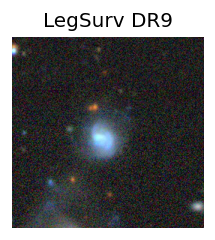
peak abs mag = -18.29 LegacySurvey: 1 sources in 3 arcsec Closest: d = 3.38 arcsec, 139.1 deg (east of north) photoz=0.04 (68% bounds 0.03, 0.06), type=EXP peak abs mag = -18.99 (68% bounds -18.47, -19.85)
4. ZTF26aakjamd (FBOT?) [Back to Top] [Share] [Trigger Swift] [Fritz ] [Lasair ]RA, Dec: 196.50797, -15.83748 13h 6m1.91s, -15d-50m-14.91sGalactic (l, b): 308.07128, 46.88859 ext(g-r) = 0.066PS1: 1 source in 3 arcsec Closest: d = 1.68 arcsec photoz=0.05+/-0.03 peak abs mag = -20.27
5. ZTF26aakjvop (Afterglow?) [Back to Top] [Share] [Trigger Swift] [Fritz ] [Lasair ]RA, Dec: 187.70254, -18.02219 12h30m48.61s, -18d-1m-19.87sGalactic (l, b): 296.04049, 44.57337 ext(g-r) = 0.052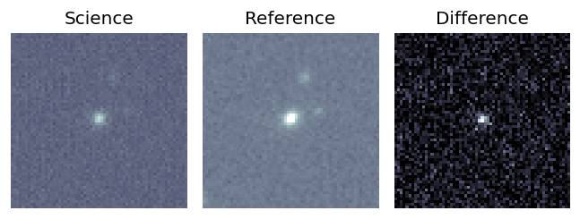
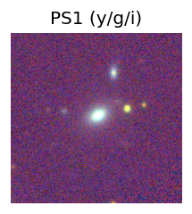
PS1: 1 source in 3 arcsec Closest: d = 0.57 arcsec photoz=0.10+/-0.01 peak abs mag = -19.31 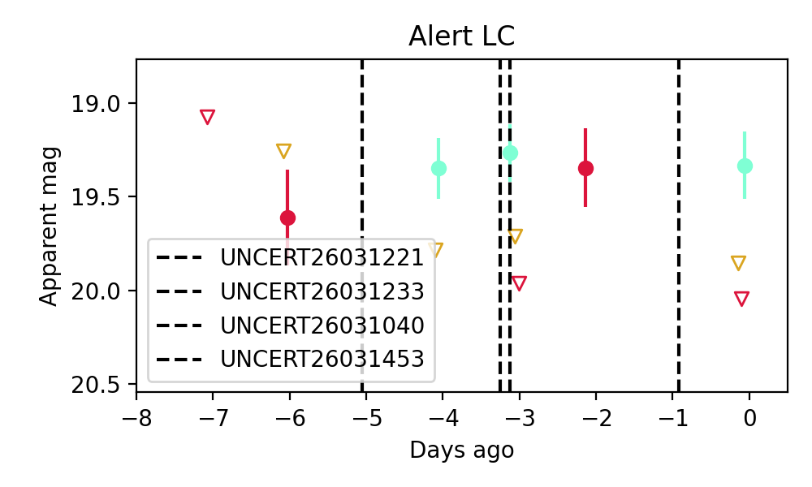
6. ZTF26aakjzdt (Afterglow?) [Back to Top] [Share] [Trigger Swift] [Fritz ] [Lasair ]RA, Dec: 219.31727, 71.84175 14h37m16.14s, 71d50m30.31sGalactic (l, b): 111.99364, 42.96755 ext(g-r) = 0.028LegacySurvey: 1 sources in 3 arcsec Closest: d = 0.83 arcsec, 45.4 deg (east of north) photoz=0.03 (68% bounds 0.01, 0.14), type=REX peak abs mag = -17.72 (68% bounds -15.47, -21.45) Consistent with synchrotron, g-r>0!
7. ZTF26aakkeyr (FBOT?) [Back to Top] [Share] [Trigger Swift] [Fritz ] [Lasair ]RA, Dec: 226.72916, 68.95419 15h 6m55.00s, 68d57m15.07sGalactic (l, b): 106.85979, 43.7045 ext(g-r) = 0.022LegacySurvey: 1 sources in 3 arcsec Closest: d = 0.77 arcsec, 300.4 deg (east of north) photoz=0.11 (68% bounds 0.05, 0.18), type=REX peak abs mag = -19.79 (68% bounds -18.06, -20.95)
8. ZTF26aakourq (FBOT?) [Back to Top] [Share] [Trigger Swift] [Fritz ] [Lasair ]RA, Dec: 155.01673, 69.72643 10h20m4.02s, 69d43m35.13sGalactic (l, b): 139.59817, 42.16476 ext(g-r) = 0.053peak abs mag = -22.25 LegacySurvey: 1 sources in 3 arcsec Closest: d = 0.05 arcsec, 124.6 deg (east of north) photoz=0.13 (68% bounds 0.08, 0.39), type=REX peak abs mag = -19.54 (68% bounds -18.37, -22.18)
9. ZTF26aakqgyq (FBOT?) [Back to Top] [Share] [Trigger Swift] [Fritz ] [Lasair ]RA, Dec: 183.12595, 12.7528 12h12m30.23s, 12d45m10.07sGalactic (l, b): 268.64791, 72.97831 ext(g-r) = 0.03peak abs mag = -19.98 LegacySurvey: 1 sources in 3 arcsec Closest: d = 0.59 arcsec, 211.2 deg (east of north) photoz=0.19 (68% bounds 0.13, 0.25), type=EXP peak abs mag = -19.72 (68% bounds -18.88, -20.43) Consistent with synchrotron, g-r>0!
10. ZTF26aakqkpn (Afterglow?) [Back to Top] [Share] [Trigger Swift] [Fritz ] [Lasair ]RA, Dec: 195.17942, 37.31005 13h 0m43.06s, 37d18m36.19sGalactic (l, b): 112.62656, 79.63183 ext(g-r) = 0.015 Consistent with synchrotron, g-r>0!
11. ZTF26aakrsab (FBOT?) [Back to Top] [Share] [Trigger Swift] [Fritz ] [Lasair ]RA, Dec: 236.02369, 7.20552 15h44m5.69s, 7d12m19.87sGalactic (l, b): 15.09881, 44.52502 ext(g-r) = 0.041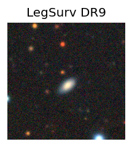
peak abs mag = -19.40 LegacySurvey: 1 sources in 3 arcsec Closest: d = 2.77 arcsec, 199.4 deg (east of north) photoz=0.1 (68% bounds 0.09, 0.11), type=SER peak abs mag = -19.42 (68% bounds -19.12, -19.62) Consistent with synchrotron, g-r>0!
12. ZTF26aalhbzf (FBOT?) [Back to Top] [Share] [Trigger Swift] [Fritz ] [Lasair ]RA, Dec: 243.47506, 51.23713 16h13m54.02s, 51d14m13.67sGalactic (l, b): 79.5926, 45.16321 ext(g-r) = 0.022LegacySurvey: 1 sources in 3 arcsec Closest: d = 0.13 arcsec, 313.2 deg (east of north) photoz=0.74 (68% bounds 0.27, 1.21), type=REX peak abs mag = -23.32 (68% bounds -20.74, -24.63) Consistent with synchrotron, g-r>0!
13. ZTF26aalhkfn (FBOT?) [Back to Top] [Share] [Trigger Swift] [Fritz ] [Lasair ]RA, Dec: 251.39152, 42.70555 16h45m33.96s, 42d42m19.97sGalactic (l, b): 67.30304, 40.59198 ext(g-r) = 0.017peak abs mag = -22.21 LegacySurvey: 1 sources in 3 arcsec Closest: d = 0.44 arcsec, 0.4 deg (east of north) photoz=0.2 (68% bounds 0.18, 0.23), type=REX peak abs mag = -20.24 (68% bounds -20.01, -20.52) Consistent with synchrotron, g-r>0!
14. ZTF26aalinio (Afterglow?) [Back to Top] [Share] [Trigger Swift] [Fritz ] [Lasair ]RA, Dec: 237.00874, 15.75274 15h48m2.10s, 15d45m9.85sGalactic (l, b): 26.69411, 47.59533 ext(g-r) = 0.04
15. ZTF26aalizrc (Afterglow?) [Back to Top] [Share] [Trigger Swift] [Fritz ] [Lasair ]RA, Dec: 318.30854, 11.54923 21h13m14.05s, 11d32m57.24sGalactic (l, b): 61.64978, -24.48348 ext(g-r) = 0.108LegacySurvey: 1 sources in 3 arcsec Closest: d = 3.49 arcsec, 319.2 deg (east of north) photoz=0.16 (68% bounds 0.07, 0.23), type=REX peak abs mag = -20.82 (68% bounds -18.92, -21.7)
16. ZTF26aaljaks (Afterglow?) [Back to Top] [Share] [Trigger Swift] [Fritz ] [Lasair ]RA, Dec: 320.47066, 0.03057 21h21m52.96s, 0d 1m50.05sGalactic (l, b): 52.31869, -32.88238 ext(g-r) = 0.06peak abs mag = -19.49 LegacySurvey: 1 sources in 3 arcsec Closest: d = 1.94 arcsec, 266.5 deg (east of north) photoz=0.07 (68% bounds 0.05, 0.08), type=SER peak abs mag = -19.69 (68% bounds -19.09, -20.08)
17. ZTF26aalkqhd (Afterglow?FBOT?) [Back to Top] [Share] [Trigger Swift] [Fritz ] [Lasair ]RA, Dec: 37.06816, 31.31172 2h28m16.36s, 31d18m42.18sGalactic (l, b): 146.12088, -27.16302 ext(g-r) = 0.102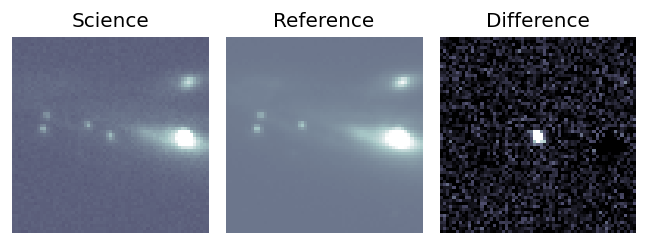
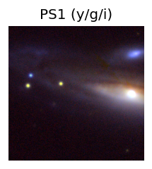
peak abs mag = -20.35 LegacySurvey: 1 sources in 3 arcsec Closest: d = 8.03 arcsec, 63.5 deg (east of north) photoz=0.24 (68% bounds 0.22, 0.3), type=PSF peak abs mag = -22.6 (68% bounds -22.35, -23.11) 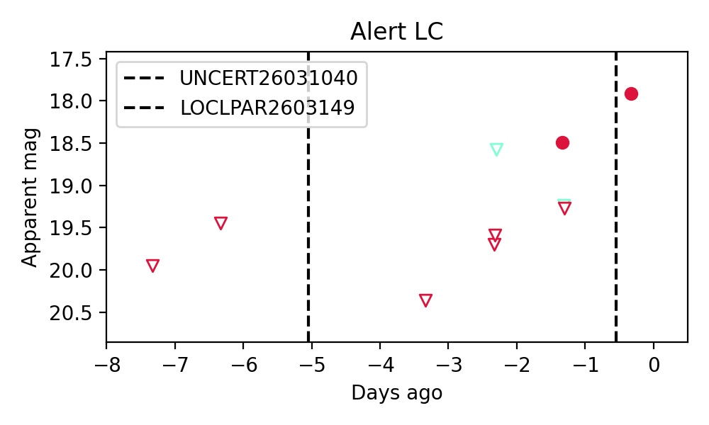
18. ZTF26aallzzy (FBOT?) [Back to Top] [Share] [Trigger Swift] [Fritz ] [Lasair ]RA, Dec: 135.69735, 73.21592 9h 2m47.36s, 73d12m57.32sGalactic (l, b): 140.19651, 35.16405 ext(g-r) = 0.033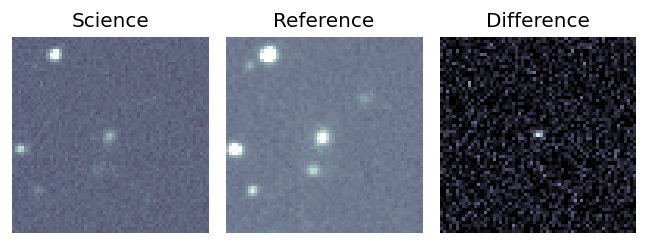
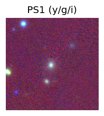
LegacySurvey: 1 sources in 3 arcsec Closest: d = 1.41 arcsec, 141.9 deg (east of north) photoz=0.19 (68% bounds 0.18, 0.2), type=SER peak abs mag = -20.24 (68% bounds -20.08, -20.36) 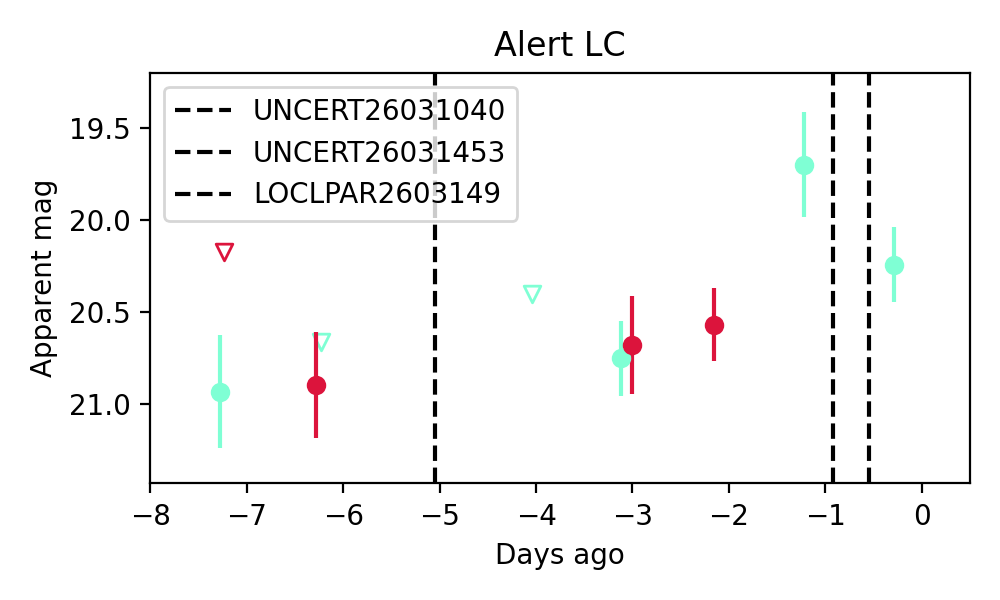
Consistent with synchrotron, g-r>0!
19. ZTF26aalnfoz (FBOT?) [Back to Top] [Share] [Trigger Swift] [Fritz ] [Lasair ]RA, Dec: 162.99783, 46.07036 10h51m59.48s, 46d 4m13.31sGalactic (l, b): 166.22824, 59.75372 ext(g-r) = 0.016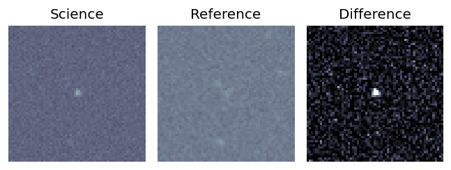
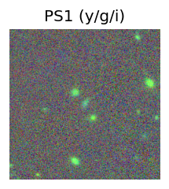
peak abs mag = -21.08 LegacySurvey: 1 sources in 3 arcsec Closest: d = 0.05 arcsec, 131.9 deg (east of north) photoz=0.13 (68% bounds 0.1, 0.18), type=EXP peak abs mag = -19.17 (68% bounds -18.46, -19.98) 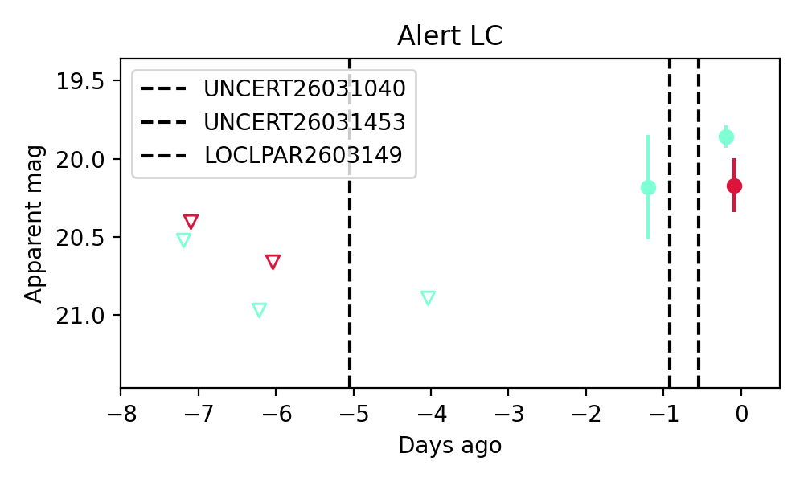
20. ZTF26aalnjiu (Afterglow?) [Back to Top] [Share] [Trigger Swift] [Fritz ] [Lasair ]RA, Dec: 140.38255, 11.40112 9h21m31.81s, 11d24m4.01sGalactic (l, b): 219.99444, 38.42688 WARNING: -3.86 deg from ecliptic plane ext(g-r) = 0.033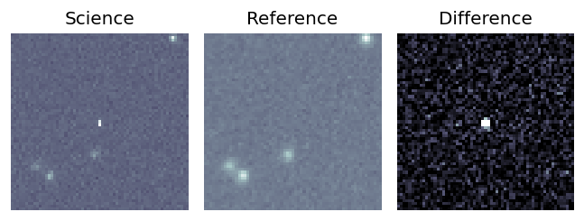
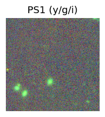
LegacySurvey: 1 sources in 3 arcsec Closest: d = 5.96 arcsec, 120.0 deg (east of north) photoz=1.07 (68% bounds 0.88, 1.27), type=REX peak abs mag = -25.53 (68% bounds -25.01, -25.98) 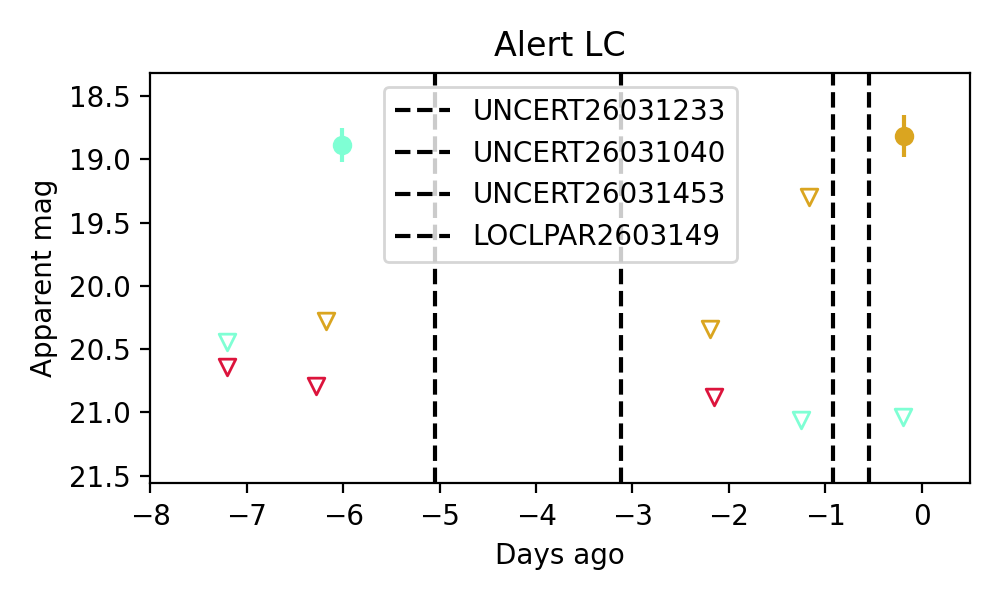
21. ZTF26aalnmtl (FBOT?) [Back to Top] [Share] [Trigger Swift] [Fritz ] [Lasair ]RA, Dec: 148.75016, 16.36097 9h55m0.04s, 16d21m39.48sGalactic (l, b): 218.35878, 47.86718 WARNING: 3.47 deg from ecliptic plane ext(g-r) = 0.036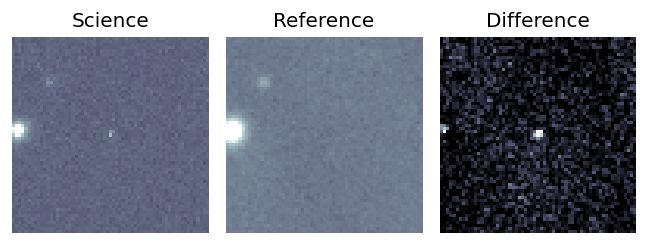
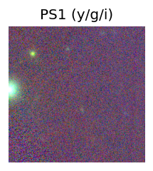
peak abs mag = -23.54 LegacySurvey: 1 sources in 3 arcsec Closest: d = 1.12 arcsec, 179.4 deg (east of north) photoz=0.67 (68% bounds 0.45, 1.12), type=PSF peak abs mag = -23.77 (68% bounds -22.78, -25.15) 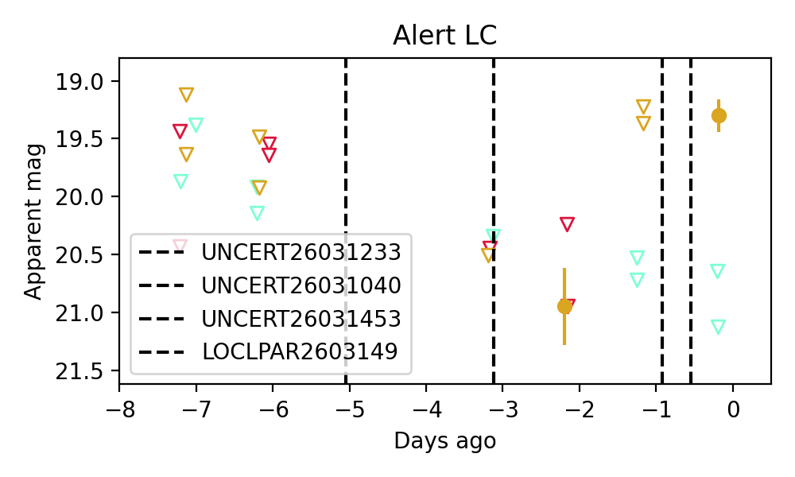
22. ZTF26aalqabk (Afterglow?FBOT?) [Back to Top] [Share] [Trigger Swift] [Fritz ] [Lasair ]RA, Dec: 152.03154, 17.79744 10h 8m7.57s, 17d47m50.79sGalactic (l, b): 218.11738, 51.31346 ext(g-r) = 0.04LegacySurvey: 1 sources in 3 arcsec Closest: d = 0.33 arcsec, 208.2 deg (east of north) photoz=0.23 (68% bounds 0.11, 0.49), type=REX peak abs mag = -20.01 (68% bounds -18.28, -21.91) Consistent with synchrotron, g-r>0!
23. ZTF26aalsfub (FBOT?) [Back to Top] [Share] [Trigger Swift] [Fritz ] [Lasair ]RA, Dec: 178.47577, 19.76337 11h53m54.19s, 19d45m48.14sGalactic (l, b): 239.07296, 74.90503 ext(g-r) = 0.035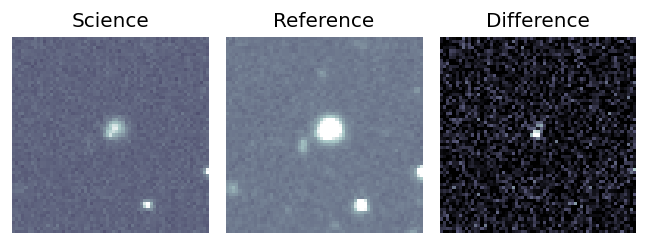
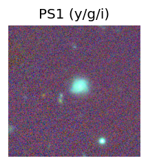
peak abs mag = -19.22 LegacySurvey: 1 sources in 3 arcsec Closest: d = 0.90 arcsec, 90.4 deg (east of north) photoz=0.22 (68% bounds 0.14, 0.45), type=REX peak abs mag = -20.27 (68% bounds -19.18, -22.1) 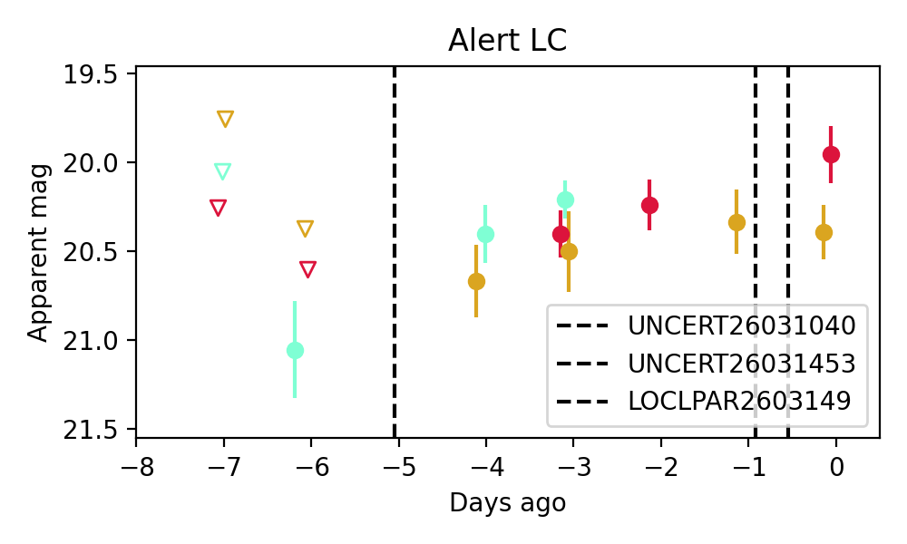
24. ZTF26aalslob (FBOT?) [Back to Top] [Share] [Trigger Swift] [Fritz ] [Lasair ]RA, Dec: 177.82293, 40.6395 11h51m17.50s, 40d38m22.21sGalactic (l, b): 161.65976, 71.65902 ext(g-r) = 0.02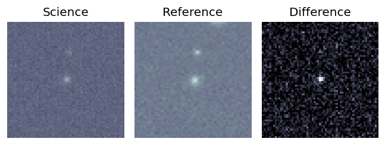
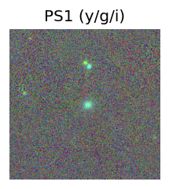
peak abs mag = -19.50 LegacySurvey: 1 sources in 3 arcsec Closest: d = 1.15 arcsec, 232.4 deg (east of north) photoz=0.07 (68% bounds 0.05, 0.12), type=REX peak abs mag = -17.51 (68% bounds -16.62, -18.54) 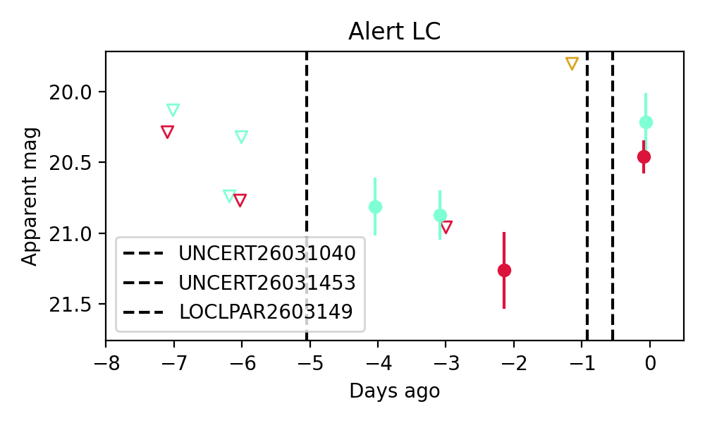